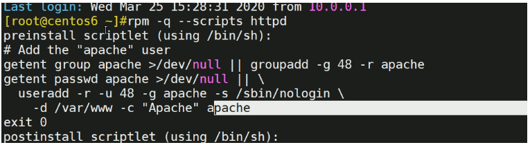
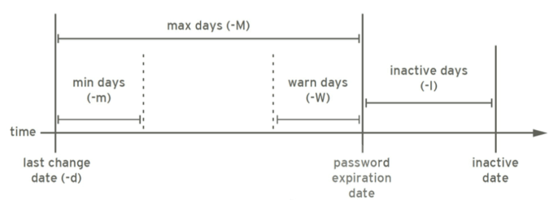
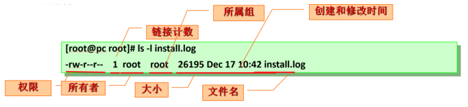
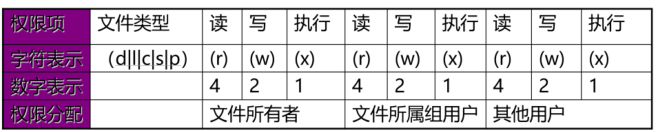
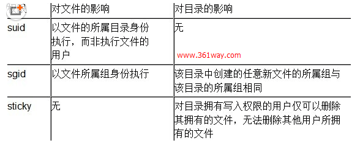

Linux用户组和权限管理
- TAGS: Linux
摘要：本文介绍Linux用户组和权限管理
Linux用户组和权限管理
内容概述
- Linux的安全模型
- 用户和组相关文件
- 用户和组管理命令
- 理解并设置文件权限
- 默认权限
- 特殊权限
- 文件访问控制列表
Linux安全模型
资源分派：
- Authentication：认证，验证用户身份
- Authorization：授权，不同的用户设置不同权限
- Accouting|Audition：审计
当用户登录成功时，系统会自动分配令牌token，包括：用户标识和组成员等信息
1. 每一个使用者 1.1 用户标识、密码 用户：这里的用户是计算机识别个体的专用标识。可以是用户名、密码、或者计算机识别标识的一种机制，而这种机制最终要转换为计算机的唯一使用标志。我们把它称之为用户ID。 在前些时候，更多的是使用字符串来识别。在识别用户时其实有2组组件来识别：用户标识、密码。 密码是一种认证手段，用来识别用户的资源使用； 资源是有限的，但使用者会很多。为了实现资源的隔离，并且判别使用者身份，就要在操作系统完成认证机制： 1.1.1 3A认证机制 认证(Authentication)通常是通过某种识别技术将其于当前系统上某个用户标识关联起来的过程。认证通过并不意味着结束，我们还需要授权(Authorization)，授权是用户身份通过后限制系统上的资源使用操作，包括创建删除等。最后还需要审计(Audition)，审计是监督权限来判断用户的授权使用是否合理。故称为3A Authentication认证：识别资源与用户的关系 Authorization授权：创建删除等 Auditon审计：监督权限关系 因此，对操作系统来讲，安装完操作系统后首先要输入用户名和密码登录进来。 1) 登录后系统能够自动的根据用户名来进行授权，linux的授权机制相对来说还是比较薄弱的，它的层次很简单只有2级分配机制，只有管理员和普通用户两类，管理员能够管理全局权限，普通用户对于系统级的资源只有读取权限和使用权限对于自己的资源有全部权限。 2) 系统还会对每一个文件附加属主、属组和其它访问权限，从而完成用户到资源映射。属主通常意味着用户是这个资源的拥有者，一般会有完全支配的权限。 3) 每一个用户对于系统上的资源使用尤其是登录认证后资源使用过程会记录到日志文件上。对于操作系统它没有对用户的每一步操作作审计，如果想做这种审计可以利用第三方机制来实现，比如在系统安装一个全局审计的系统，任何用户的操作都会记录下来，比如SELINUX。 1.2 组：用户组 用户组是用户的容器。将多用户合并形成一个逻辑概念，逻辑组 作用：便于权限分配，能够实现授权多个用户对某一个文件使用权限 1.3 为什么有用户、组和权限： 1、授权机制：管理员，普通用户，两极分配，管理机制较弱。 2、系统会对每个文件附加属主、属组、其他访问权限，从而完成从用户到资源权限映射 3、每一个用户对资源的使用都会记录到日志中，用来用户行为审计。但并不是对用户每一步都审计。如第三方审计selinux
用户
Linux中每个用户是通过User Id （UID）来唯一标识的
- 管理员：root, 0
- 普通用户：1-60000 自动分配
- 系统用户：1-499 （CentOS 6以前）, 1-999 （CentOS 7以后） 对守护进程获取资源进行权限分配
- 登录用户：500+ （CentOS6以前）, 1000+（CentOS7以后） 给用户进行交互式登录使用
用户组
Linux中可以将一个或多个用户加入用户组中，用户组是通过Group ID（GID）来 唯一标识的。
- 管理员组：root, 0
- 普通组：
- 系统组：1-499（CentOS 6以前）, 1-999（CentOS7以后）, 对守护进程获取资源进行权限分配
- 普通组：500+（CentOS 6以前）, 1000+（CentOS7以后）, 给用户使用
用户和组的关系
- 用户的主要组(primary group)：用户必须属于一个且只有一个主组，默认创 建用户时会自动创建和用户名同名的组，做为用户的主要组，由于此组中只有 一个用户，又称为私有组
用户的附加组(supplementary group)：一个用户可以属于零个或多个辅助组， 附属组 范例:
[root@centos8 ~]#id postfix uid=89(postfix) gid=89(postfix) groups=89(postfix),12(mail)
安全上下文
Linux安全上下文Context：运行中的程序，即进程(process)，以进程发起者的 身份运行，进程所能够访问资源的权限取决于进程的运行者的身份
比如：分别以root 和wang 的身份运行 /bin/cat /etc/shadow，得到的结果是 不同的，资源能否能被访问，是由运行者的身份决定，非程序本身
范例:
[wang@centos8 ~]$cat /etc/shadow cat: /etc/shadow: Permission denied [root@centos8 ~]#cat /etc/shadow root:$6$zsrWEC56PrKifAEz$hylCuGySe.H6l6O2MRvbtqy/VZgnZbau.y57dE85.YHq03MTJVV4UvQ VIDcYA1IJzbgpWE0vTU.BtPHLbNBNn0:18246:0:99999:7::: bin:*:18027:0:99999:7::: daemon:*:18027:0:99999:7::: adm:*:18027:0:99999:7::: lp:*:18027:0:99999:7:::
用户和组的配置文件
用户和组的主要配置文件
- /etc/passwd：用户及其属性信息(名称、UID、主组ID等）
- /etc/shadow：用户密码及其相关属性
- /etc/group：组及其属性信息
- /etc/gshadow：组密码及其相关属性
passwd文件格式
name:password:UID:GID:GECOS:directory:shell
- login name：登录用名（xu）
passwd：密码 (x); 占位符
x表示密码存在/etc/shadow中；如果是
!说明此用户不能用密码登录；或者是
*号; 细节man 5 passwd; man pwconv(密码转换)- UID：用户身份编号 (从 1000 开始)
- GID：登录默认所在组编号 (1000)
- GECOS：用户全名或注释
- home directory：用户主目录 (/home/wang)
- shell：用户默认使用shell (/bin/bash)
shadow文件格式
username:password:last_change:min_change:max_change:warm:failed_expire:expiration:reserved 格式(九段):用户名:加密的密码:最近一次修改密码的时间:最短使用期限:最长使用期限:警告期段:密码禁用期:过期期限:保留字段 root:$1$HDHf2v4i$LMo.xGHfxQDOf8e043C.g/:16779:0:99999:7:::
- username: 登录用名
- password: 一般用sha512加密
last_change :
从1970年1月1日起到密码最近一次被更改的时间，如16779，表示之后第16779 天，使用
date -d '1970-01-01 16779 days'查看当天修改的日期- min_change: 密码再过几天可以被变更（0表示随时可被变更）
- max_change :密码再过几天必须被变更（99999表示永不过期）
- warm : 密码过期前几天系统提醒用户（默认为一周）
- failed_expire : 密码过期几天后帐号会被锁定
- expiration : 从1970年1月1日算起，多少天后帐号失效。 不同于密码过期；账户过期时，用户将不被允许登录；密码过期时，用户将不被允许使用其密码登录。
- reserved : 保留字段
用户密码段说明：
password: 一般用sha512加密。 系统用户是不能登录的，密码字段为星号（*）； 两个感叹号（!!）表示这个用户被锁定了，无法登录； 美元符号（$）出现在加密格式的密码里，起到分隔作用； 由三部分组成的，以$分隔，即：$id$salt$encrypted $数字$随机数$加密后的密码串；第3个 $ 分隔的才是真正的密码串；id表示加密算法，当id为1时，使用md5加密，以此类推，id为6采用SHA512进行加密。
密码存储格式：单向加密，并借助于salt完成
- 1: md5
- sha1
- sha224
- sha256
- sha384
- 6: sha512
真正实现密码比对是这样的，如， 用户使用密码为hello，加入了随机数如12345678，生成一个加密字串hello12345678 在用户登录时，输入 hello 密码，这时计算算法会把记录的数(在 /etc/shadow 中记录 )提取出来被在 hello 后面计算下并生成加密字串 hello12345678，最后再进行来原密码比较。
更改密码加密算法：
authconfig --passalgo=sha256 --update
密码的安全策略：
- 足够长
- 使用数字、大写字母、小写字母及特殊字符中至少3种
- 使用随机密码
定期更换,不要使用最近曾经使用过的密码 范例：生成随机密码
[root@centos8 ~]#tr -dc '[:alnum:]' < /dev/urandom | head -c 12 sFg6C8g5FAfe[root@centos8 ~]#openssl rand -base64 9 hvMkPmAyIrXMQInt
生成加密密码的方式：
# md5加密 openssl passwd -1 -salt `openssl rand -hex 4` #使用16进制随机当作“佐料 Password: $1$fc43df06$iZPo9xnH5IrvkDvICWe0X1 # 使用grub-crypt命令，会提示输出密码： grub-crypt --md5 # python，同样也会提示输出密码 echo 'import crypt,getpass; print crypt.crypt(getpass.getpass(), "$1$8_CHARACTER_SALT_HERE")' | python - # perl perl -e 'print crypt("1234abcdefg",q($1$password)),"\n"' 当使用特殊字符时，例如@$符时需要在前面加上\，例：\@\$，否则加密字符串会错误 其中1234abcdefg为要给用户设置的密码，$1$password字符串是自定义字符串，shadow里一般用$1$后面跟8个字符这种格式。
如，查看cetnos用户密码信息
[root@node01 ~]# cat /etc/shadow centos:$6$lLZBCZMe$.AjEoX0iR.kPWZRIms30tjq3KbAr5vn3Is/d6uBe78Lx9lz4vjKTUJxluFow79dBoqmowXYADjR.X8iomGu6B1:17546:0:99999:7::: [root@node01 ~]# echo "17546" | awk '{print strftime("%F")}' #转换最近一次修改密码时间为易读时间 2018-01-16 [root@middle-ware ~]# getent passwd root root:x:0:0:root:/root:/bin/bash [root@middle-ware ~]# getent shadow root root:$6$G7pLVnKe4xdwkUQ6$oL0Z2gOtb7ssPatwwUKBhhAuft.cJHkt7MO.FXw0ZxzIS0BX0R4A1o85bVrPEeiDZOdAhP9ffI725jtrfx/kP.::0:99999:7:::
安全攻防: hashcat、Hydra、John the ripper
group文件格式
格式：group_name:password:GID:user_list
群组名称：就是群组名称 群组密码：通常不需要设定，占位符x，密码是被记录在 /etc/gshadow GID：就是群组的 ID 以当前组为附加组的用户列表(分隔符为逗号)
distro:x:5000:gentoo ~]# id gentoo uid=4001(gentoo) gid=4001(gentoo) 组=4001(gentoo),5000(distro),5001(peguin)
gshdow文件格式
格式：group name:encrypted password:administrators:members
- 群组名称：就是群的名称
- 群组密码：以！开头表示无合法密码，所以无用户组管理员
- 组管理员列表：组管理员的列表，更改组密码和成员
- 以当前组为附加组的用户列表：多个用户间用逗号分隔
文件操作
- vipw和vigr
- pwck和grpck
用户健康状态审计：
[root@node01 ~]# pwck user 'ftp': directory '/var/ftp' does not exist user 'gentoo': directory '/var/tmp/gentoo' does not exist user 'fedora': program '/bin/tcsh' does not exist pwck: no changes [root@node01 ~]# grpck
用户和组管理命令
用户管理命令
- useradd
- usermod
- userdel
组帐号维护命令
- groupadd
- groupmod
- groupdel
用户创建 useradd
useradd 命令可以创建新的Linux用户 格式：
useradd [options] LOGIN
常见选项：
-u UID -o 配合-u 选项，不检查UID的唯一性 -g GID 指明用户所属基本组，可为组名，也可以GID.此组要事先存在 -c "COMMENT“ 用户的注释信息 -d HOME_DIR 以指定的路径(不存在)为家目录。通过复制/etc/skel此目录并重命名实现；指定的家目录路径如果实现存在，则不会为用户复制环境配置文件； -s SHELL 指明用户的默认shell程序，可用列表在/etc/shells文件中。也可以不指明里面的shell，但是在安全检查时可能会报错。 -G GROUP1[,GROUP2,...] 为用户指明附加组，组须事先存在 -N 不创建私用组做主组，使用users组做主组 -r 创建系统用户 CentOS 6之前: ID<500，CentOS 7以后: ID<1000 -m 创建家目录，用于系统用户 -M 不创建家目录，用于非系统用户 -f,--inactive : 更改非活动期限天数。0 表示立即禁止，-1 表示永不过期。 -p 输入加密口令
范例:
useradd -r -u 48 -g apache -s /sbin/nologin -d /var/www -c "Apache" apache
useradd 命令默认值设定由/etc/default/useradd定义
[root@centos8 ~]#cat /etc/default/useradd # useradd defaults file GROUP=100 HOME=/home INACTIVE=-1 #对应/etc/shadow文件第7列，即用户密码过期的宽限期 EXPIRE= #对应/etc/shadow文件第8列，即用户帐号的有效期 SHELL=/bin/bash SKEL=/etc/skel CREATE_MAIL_SPOOL=yes
显示或更改默认设置
useradd -D # 显示创建用户的默认配置 或 cat /etc/default/useradd 结果一样 useradd –D -s SHELL # 修改完系统默认添加用户的 shell useradd –D –b BASE_DIR useradd –D –g GROUP
新建用户的相关文件
- /etc/default/useradd
- /etc/skel/*
- /etc/login.defs
批量创建用户
newusers passwd 格式文件
范例: CentOS 6 创建并指定基于sha512的用户密码
方法 1： [root@centos6 ~]#grub-crypt --help Usage: grub-crypt [OPTION]... Encrypt a password. -h, --help Print this message and exit -v, --version Print the version information and exit --md5 Use MD5 to encrypt the password --sha-256 Use SHA-256 to encrypt the password --sha-512 Use SHA-512 to encrypt the password (default) Report bugs to <bug-grub@gnu.org>. EOF [root@centos6 ~]#grub-crypt --sha-512 Password: Retype password: $6$v9A2/xUNwAWwEmHN$q7Wz.uscsV/8J5Gss3KslX8hKXOoaP3hDpOBWeBfMQHVIRZiwHUUkii84cvQWIMnvtnXYsdVHuLO4KhOiSOMh/ [root@centos6 ~]#useradd -p '$6$v9A2/xUNwAWwEmHN$q7Wz.uscsV/8J5Gss3KslX8hKXOoaP3hDpOBWeBfMQHVIRZiwHUUkii84cvQWIMnvtnXYsdVHuLO4KhOiSOMh/' test [root@centos6 ~]#getent shadow test test:$6$v9A2/xUNwAWwEmHN$q7Wz.uscsV/8J5Gss3KslX8hKXOoaP3hDpOBWeBfMQHVIRZiwHUUkii84cvQWIMnvtnXYsdVHuLO4KhOiSOMh/:18459:0:99999:7::: 方法2： useradd -p `echo meu | openssl passwd -6 -salt ARZrof3ZBlFLYESn -stdin` zhang
范例: 利用Python程序在CentOS7 生成sha512加密密码
[root@centos7 ~]#python -c 'import crypt,getpass;pw="me";print(crypt.crypt(pw))' $6$pt2FMf6YqKea3mh$.7Hkslg17uI.Wu7tVVtkzrwktXrOC8DxcMFC4JO1igrqR7VAi87H5PHOuLTUEjl7eJqKUhMT1e9ixojn1
范例: CentOS8 生成sha512加密密码
[root@centos8 ~]#openssl passwd -6 me $6$UOyYOao.iM2.rPnM$jCpTehqh5e234fXcDzkDMddthpKNL3scOZjTHh9fXds8Eu6gNdEQqLMQgOboipZ08mnz2V.
useradd -D：显示创建用户的默认配置
其实在修改/etc/default/useradd
[root@node01 ~]# useradd -D GROUP=100 HOME=/home INACTIVE=-1 非活动期限为禁用，宽限期 EXPIRE= 过去期限9999 SHELL=/bin/bash SKEL=/etc/skel CREATE_MAIL_SPOOL=yes 要不要创建邮件缓存序列，/var/spool/mail/目录创建
解释：
- GROUP : 创建用户时要给它添加一个同名的私有组 ，默认 100
- HOME : 用户创建时尤其是系统组时要不要创建一个家目录，如果创建，家目 录所在的位置。默认在 /home 目录，即在 /home 目录下创建一个各用户同名 的目录。
- INACTIVE : 非活动期限。默认 -1 表示禁用
- EXPIRE : 过去期限，没有时间则表示为永不过期，默认为99999
- SHELL : 指明用户使用的 shell 类型，默认 /bin/bash
- SKEL : 复制用户骨架信息的位置，默认位置为/etc/skel
- CREATE_MAIL_SPOOL : 是否给用户创建邮件缓存序列，默认 yes，表示每创建 一个用户会在 var/spool/mail 目录创建用户专用的邮箱
注意：创建用户时的诸多默认设定配置文件为/etc/login.defs
[root@node01 ~]# egrep -v '^$|^#' /etc/login.defs
MAIL_DIR /var/spool/mail 邮件队列目录
PASS_MAX_DAYS 99999 密码最大使用天数，99999基本表示永远
PASS_MIN_DAYS 0 密码最小使用天数
PASS_MIN_LEN 5 密码最小长度
PASS_WARN_AGE 7 密码过期警告日期
UID_MIN 1000 普通用户最小 ID 号
UID_MAX 60000 普通用最大 ID 号
SYS_UID_MIN 201 系统用户最小ID号
SYS_UID_MAX 999 系统用户最大 ID 号
GID_MIN 1000 最小用户组ID号
GID_MAX 60000 最大用户组ID号
CREATE_HOME yes 创建家目录
UMASK 077 默认遮罩码
USERGROUPS_ENAB yes 删除用户是如果其组没有用户一并删除
ENCRYPT_METHOD SHA512 使用额加密算法为SHA512
复制小技巧
# 复制目录下的隐藏文件 cp /etc/skel/.[^.]* /home/test # 复制目录下的所有文件 cp -r /etc/skel/. /home/test cp -r /etc/skel /home/test
批量修改用户口令
echo username:passwd | chpasswd

用户属性修改 usermod
usermod 命令可以修改用户属性 格式：
usermod [OPTION] login
常见选项：
-u UID: 新UID
-g GID: 新主组,注意该事先存在
-G GROUP1[,GROUP2,...[,GROUPN]]]：新附加组，原来的附加组将会被覆盖；若保留原有，则要同时使用-a选项
-s SHELL：新的默认SHELL
-c 'COMMENT'：新的注释信息
-d HOME: 新家目录不会自动创建；若要创建新家目录并移动原家数据，同时使用-m选项
-l login_name: 新的名字
-L: lock指定用户,在/etc/shadow 密码栏的增加 !
-U: unlock指定用户,将 /etc/shadow 密码栏的 ! 拿掉
-e YYYY-MM-DD: 指明用户账号过期日期
-f INACTIVE: 设定非活动期限，即宽限期
-m, --move-home : 只能与-d选项一同使用，用于将原来的家目录移动为新的家目录；
-p : 指明密码
范例：
# 清空用户的附加组 usermod -G '' wang # bobo 添加到 wheel 组中 sudo usermod -aG wheel bobo # 更改bobo的组为wheel usermod -G wheel bobo # 锁定用户 usermod -L 用户名
删除用户 userdel
userdel 可删除Linux 用户 格式：
userdel [OPTION]... Login
常见选项：
-f, --force 强制 -r, --remove 删除用户家目录和邮箱
查看用户相关的ID信息 id
id 命令可以查看用户的UID，GID等信息
id [OPTION]... [USER]
常见选项：
-u: 显示UID -g: 显示GID -G: 显示用户所属的组的ID -n: 显示名称，需配合ugG使用
切换用户或以其他用户身份执行命令 su
su: 即 switch user，命令可以切换用户身份，并且以指定用户的身份执行命令 格式：
su [options...] [-] [user [args...]]
常见选项：
-l --login su -l UserName 相当于 su - UserName -c, --command <command> pass a single command to the shell with -c
切换用户的方式：
- su UserName：非登录式切换，即不会读取目标用户的配置文件，不改变当前工作目录，即不完全切换
- su - UserName：登录式切换，会读取目标用户的配置文件，切换至自已的家目录，即完全切换
说明：root su至其他用户无须密码；非root用户切换时需要密码
注意：su 切换新用户后，使用 exit 退回至旧的用户，而不要再用 su切换至旧 用户，否则会生成很多的bash子进程，环境可能会混乱。
换个身份执行命令：
su [-] UserName -c 'COMMAND'
切换用户并给定一个bash
su - docker -s '/bin/bash'
范例：用户不可登录的方法
[root@centos8 ~]#su -s /sbin/nologin wang This account is currently not available. [root@centos8 ~]#whoami root [root@centos8 ~]#su -s /bin/false wang # 不报错 [root@centos8 ~]#whoami root
范例:
[wang@centos8 ~]$su - root -c "getent shadow"
范例：
[root@middle-ware ~]# su - admin -c 'touch a.txt'
[root@middle-ware ~]# ll ~admin
total 0
-rw-rw-r-- 1 admin admin 0 Dec 26 01:00 a.txt
范例：
[root@centos8 ~]#su bin This account is currently not available. [root@centos8 ~]#su -s /bin/bash bin bash-4.4$ whoami bin bash-4.4$ [root@centos8 ~]#getent passwd tss tss:x:59:59:Account used by the trousers package to sandbox the tcsd daemon:/dev/null:/sbin/nologin [root@centos8 ~]#su - -s /bin/bash tss Last login: Fri Mar 27 09:46:43 CST 2020 on pts/0 su: warning: cannot change directory to /dev/null: Not a directory -bash: /dev/null/.bash_profile: Not a directory [tss@centos8 root]$pwd /root [tss@centos8 root]$whoami tss
设置密码 passwd

passwd 可以修改用户密码 格式：
passwd [OPTIONS] UserName 1) passwd：修改用户自己的密码； 2) passwd USERNAME：修改指定用户的密码，但仅root有此权限；
常用选项：
-d：删除指定用户密码 -l：锁定指定用户。不能登录 /etc/shadow 第二段出现2个感叹号 -u：解锁指定用户 -e：强制用户下次登录修改密码 -f：强制操作 -n mindays：指定最短使用期限 -x maxdays：最大使用期限 -w warndays：提前多少天开始警告 -i inactivedays：非活动期限 -S : 查看用户状态 --stdin：从标准输入接收用户密码,Ubuntu无此选项
范例：
echo "PASSWORD" | passwd --stdin USERNAME
范例：非交互式修改用户密码
#此方式更通用，适用于各种Linux版本，如:ubuntu [root@centos8 ~]#echo -e '123456\n123456' | passwd me #适用于红帽系列的Linux版本 [root@centos8 ~]#echo '123456' | passwd --stdin me
范例: Ubuntu 非交互式修改用户密码
[root@ubuntu1804 ~]#echo wang:centos |chpasswd [root@ubuntu1804 ~]#passwd wang <<EOF > centos > centos > EOF [root@ubuntu1804 ~]#echo -e '123456\123456' | passwd wang
范例：设置用户下次必须更改密码
[root@centos8 ~]#useradd wang [root@centos8 ~]#echo 123456 | passwd --stdin wang Changing password for user wang. passwd: all authentication tokens updated successfully. [root@centos8 ~]#getent shadow wang wang:$6$4f78ko7hJ4fcMvIH$lpbOkFfziDBLT.8XBCi8c/N7wysDAejN5H9Fgxkt99HRDLTEosO43CK Yi2XSSVHxAK568Olj3C5bwfNExlves/:18348:0:99999:7::: [root@centos8 ~]#passwd -e wang Expiring password for user wang. passwd: Success [root@centos8 ~]#getent shadow wang wang:$6$4f78ko7hJ4fcMvIH$lpbOkFfziDBLT.8XBCi8c/N7wysDAejN5H9Fgxkt99HRDLTEosO43CK Yi2XSSVHxAK568Olj3C5bwfNExlves/:0:0:99999:7::: [root@centos8 ~]#su - admin Last login: Fri Mar 27 09:55:27 CST 2020 on pts/0 [cici@centos8 ~]$su - wang Password: You are required to change your password immediately (administrator enforced) Current password: New password: BAD PASSWORD: The password is shorter than 8 characters New password: BAD PASSWORD: The password fails the dictionary check - it is too simplistic/systematic su: Have exhausted maximum number of retries for service [cici@centos8 ~]$su - wang Password: You are required to change your password immediately (administrator enforced) Current password: New password: Retype new password: Last login: Fri Mar 27 10:01:20 CST 2020 on pts/0 Last failed login: Fri Mar 27 10:02:37 CST 2020 on pts/0 There was 1 failed login attempt since the last successful login. [wang@centos8 ~]$exit logout [cici@centos8 ~]$exit logout [cici@centos8 ~]#getent shadow wang wang:$6$TX0iLjF52ByHh1zH$g.WI4LNfauuwgnxpRhd7ePqFKHZ85YU3r6Lh2S0PWRXWGjGlDVtomLW qpdiWrT.vwqD/Wzok.kzQhUHc8UCs91:18348:0:99999:7:::
如，-d : 清除用户密码串；
[root@node01 ~]# useradd docker [root@node01 ~]# echo '123456' | passwd --stdin docker [root@node01 ~]# tail /etc/shadow docker:$6$G6nWXI99$0x0tH.fh2RO1Vl0nbRZBWI6yK.M6csr5EnovKWOqRm.NLd10pw/0PCFqiCvBWA/yWW2La00oZS.lWWjQqjDA30:17550:0:99999:7::: [root@node01 ~]# passwd -d docker [root@node01 ~]# tail /etc/shadow docker::17550:0:99999:7:::
如，-l, -u : 锁定和解锁用户； 不能登录 /etc/shadow 第二段出现2个感叹号
[root@node01 ~]# useradd -c "Fedora Core" -s /bin/tcsh fedora #创建用户fedora,其注释信息为"Fedora Core",默认shell为/bin/tcsh [root@node01 ~]# passwd -l fedora [root@node01 ~]# tail -1 /etc/shadow fedora:!!:17549:0:99999:7::: [root@node01 ~]# passwd -S fedora #查看用户状态 fedora LK 2018-01-18 0 99999 7 -1 (Password locked.) [root@node01 ~]# passwd -uf fedora # 解锁用户 [root@node01 ~]# passwd -S fedora fedora NP 2018-01-18 0 99999 7 -1 (Empty password.) [root@node01 ~]# tail -1 /etc/shadow fedora::17549:0:99999:7:::
linux系统锁定一个用户账号，方法有很多：
- 以Root登陆，删除用户userdel -r 用户名；
- 以Root登陆，锁定用户usermod -L 用户名；
- 以Root登陆，不给用户交互式的shell ： usermod -s sbin/nonlogin； 以上三种最简单。
修改用户密码策略 chage
chage 可以修改用户密码策略 格式：
chage [OPTION]... LOGIN
常见选项：
-d LAST_DAY #更改密码的时间 -m --mindays MIN_DAYS 最短使用时间 -M --maxdays MAX_DAYS 最长使用时间 -W --warndays WARN_DAYS 警告时间 -I --inactive INACTIVE #密码过期后的宽限期 -E --expiredate EXPIRE_DATE #用户的有效期 -l 显示密码策略
范例：
[root@centos8 ~]#chage -m 3 -M 42 -W 14 -I 7 -E 2020-10-10 wang [root@centos8 ~]#chage -l wang Last password change : Dec 18, 2019 Password expires : Jan 29, 2020 Password inactive : Feb 05, 2020 Account expires : Oct 10, 2020 Minimum number of days between password change : 3 Maximum number of days between password change : 42 Number of days of warning before password expires : 14 [root@centos8 ~]#getent shadow wang wang:$6$82L7A37XJgzKTegH$lFzqrMHmFwW740U32bvWHUuakPDKOiULE/CxcyDzSe1qi1X2ALulDw1 WYrhd2wE00.lWO0im5//7biyV.juk5.:18248:3:42:14:7:18545: #下一次登录强制重设密码 [root@centos8 ~]#chage -d 0 wang [root@centos8 ~]#getent shadow wang wang:$6$82L7A37XJgzKTegH$lFzqrMHmFwW740U32bvWHUuakPDKOiULE/CxcyDzSe1qi1X2ALulDw1 WYrhd2wE00.lWO0im5//7biyV.juk5.:0:3:42:14:7:18545: [root@centos8 ~]#chage -l wang Last password change : password must be changed Password expires : password must be changed Password inactive : password must be changed Account expires : Oct 10, 2020 Minimum number of days between password change : 3 Maximum number of days between password change : 42 Number of days of warning before password expires : 14 [root@centos8 ~]#getent shadow wang wang:$6$82L7A37XJgzKTegH$lFzqrMHmFwW740U32bvWHUuakPDKOiULE/CxcyDzSe1qi1X2ALulDw1 WYrhd2wE00.lWO0im5//7biyV.juk5.:0:3:42:14:7:18545:
用户相关的其它命令 chfn chsh finger
- chfn 指定个人信息
- chsh 指定shell，相当于usermod -s
- finger 可看用户个人信息
范例:
[root@centos7 ~]#chfn cici Changing finger information for cici. Name [cici]: zcici Office []:it Office Phone []: 10000 Home Phone []: 11111 Finger information changed. [root@centos7 ~]#finger cici Login: cici Name: zcici Directory: /home/cici Shell: /bin/bash Office: it, x1-0000 Home Phone: x1-1111 Never logged in. No mail. No Plan. [root@centos7 ~]#getent passwd cici cici:x:1000:1000:zcici,it,10000,11111:/home/cici:/bin/bash [root@centos7 ~]#chsh -s /bin/csh cici Changing shell for cici. Shell changed. [root@centos7 ~]#getent passwd cici cici:x:1000:1000:wangsicong,wanda,10000,11111:/home/cici:/bin/csh [root@centos7 ~]#usermod -s /bin/bash cici [root@centos7 ~]#getent passwd cici cici:x:1000:1000:wangsicong,wanda,10000,11111:/home/cici:/bin/bash
范例: 修改用户使用不可登录的shell类型
[root@centos8 ~]#getent passwd cici cici:x:1000:1000:zcici,IT,110,119,:/home/cici:/bin/bash [root@centos8 ~]#chsh -s /sbin/nologin cici Changing shell for cici. chsh: Warning: "/sbin/nologin" is not listed in /etc/shells. Shell changed. [root@centos8 ~]#su - cici This account is currently not available. [root@centos8 ~]#chsh -s /bin/false cici Changing shell for cici. chsh: Warning: "/bin/false" is not listed in /etc/shells. Shell changed. [root@centos8 ~]#su - cici [root@centos8 ~]#id uid=0(root) gid=0(root) groups=0(root) [root@centos8 ~]#chsh -s /bin/bash cici Changing shell for cici. Shell changed. [root@centos8 ~]#su - cici [cici@centos8 ~]$
创建组 groupadd
groupadd实现创建组 格式
groupadd [OPTION]... group_name
常见选项：
-g GID 指明GID号；[GID_MIN, GID_MAX] -r 创建系统组，CentOS 6之前: ID<500，CentOS 7以后: ID<1000 范例:
[root@node01 ~]# groupadd -g 2000 grp1 #指定组ID [root@node01 ~]# groupadd testgrp2 #不加 -g 选项，默认是上一个组 GID+1 [root@node01 ~]# tail -2 /etc/group grp1:x:2000: testgrp2:x:2001: [root@node01 ~]# groupadd -r -g 306 mariadb #组合使用 -r -g ，创建系统组并指定GID
修改组 groupmod
groupmod 组属性修改
格式：
groupmod [OPTION]... group
常见选项：
-n group_name: 新名字 -g GID: 新的GID
如，将系统组 mariadb 的 GID 为306 改为 GID 为 702
[root@node01 ~]# groupadd -r -g 306 mariadb [root@node01 ~]# groupmod -g 702 mariadb [root@node01 ~]# tail -2 /etc/group testgrp2:x:2001: mariadb:x:702:
如，将组 mariadb 重命名为 perconaserver
[root@node01 ~]# groupmod -n perconaserver mariadb [root@node01 ~]# tail -2 /etc/group testgrp2:x:2001: perconaserver:x:702:
组删除 groupdel
groupdel 可以删除组 格式
groupdel [options] GROUP
常见选项： -f, –force 强制删除，即使是用户的主组也强制删除组
更改组密码 gpasswd
gpasswd命令，可以更改组密码，也可以修改附加组的成员关系
用户临时切换到不属于自己的附属组的其他组时候要通过组密码验证
无密码的组不能被任何用户切换，仅能被组所包含的用户切换
格式
gpasswd [OPTION] GROUP
常见选项：
-a user 将user添加至指定组中 -d user 从指定附加组中移除用户user -A user1,user2,... 设置有管理权限的用户列表
范例:
#增加组成员 [root@centos8 ~]#groupadd admins [root@centos8 ~]#id wang uid=1000(wang) gid=1000(wang) groups=1000(wang) [root@centos8 ~]#gpasswd -a wang admins Adding user wang to group admins [root@centos8 ~]#id wang uid=1000(wang) gid=1000(wang) groups=1000(wang),1002(admins) [root@centos8 ~]#groups wang wang : wang admins [root@centos8 ~]#getent group admins admins:x:1002:wang #删除组成员 [root@centos8 ~]#gpasswd -d wang admins Removing user wang from group admins [root@centos8 ~]#groups wang wang : wang [root@centos8 ~]#id wang uid=1000(wang) gid=1000(wang) groups=1000(wang) [root@centos8 ~]#getent group admins admins:x:1002:
[root@node01 ~]# groupadd mygrp #创建组 [root@node01 ~]# cat /etc/gshadow | grep mygrp # 一般创建的组都是没有密码的 mygrp:!::archlinux [root@node01 ~]# gpasswd mygrp #给组 mygrp 设定密码 [root@node01 ~]# useradd docker #创建 docker 用户 [root@node01 ~]# su - docker #su - USER命令切换到用户环境 [docker@node01 ~]$ id uid=1001(docker) gid=2002(docker) groups=2002(docker) [docker@node01 ~]$ newgrp mygrp #临时切换用户的基本组，如果组设定了密码需要输入密码 Password: [docker@node01 ~]$ id uid=1001(docker) gid=1001(mygrp) groups=1001(mygrp),2002(docker) [docker@node01 ~]$ exit #退出临时基本组
临时切换主组 newgrp
newgrp 命令可以临时切换主组， 如果用户本不属于此组，则需要组密码
格式：
newgrp [-] [group]
如果使用 - 选项，可以初始化用户环境
[root@centos8 ~]#gpasswd root Changing the password for group root New Password: Re-enter new password: [root@centos8 ~]#getent gshadow root root:$6$UKK78gqOvw/Ug$exBe4gHUYzSj/Gip0YkXII8RkPca7QGVto6Ws5SFd6lhxxklCsfKqiv1qy EQZOfGK2WbR7/I.A2.7j1SUGuB91:: [cici@centos8 ~]$newgrp root Password: [cici@centos8 ~]$id uid=1000(cici) gid=0(root) groups=0(root),1000(cici) [cici@centos8 ~]$getent passwd cici cici:x:1000:1000:zcici,IT,110,119,:/home/cici:/bin/bash [cici@centos8 ~]$touch wang1.txt [cici@centos8 ~]$ll total 0 -rw-r--r-- 1 cici root 0 Dec 18 09:38 wang1.txt [cici@centos8 ~]$exit exit [cici@centos8 ~]$id uid=1000(cici) gid=1000(cici) groups=1000(cici) [cici@centos8 ~]$touch wang2.txt [cici@centos8 ~]$ll total 0 -rw-r--r-- 1 cici root 0 Dec 18 09:38 wang1.txt -rw-rw-r-- 1 cici cici 0 Dec 18 09:38 wang2.txt
更改和查看组成员 groupmems groups
groupmems 可以管理附加组的成员关系 格式
groupmems [options] [action]
常见选项：
-g, --group groupname #更改为指定组 (只有root) -a, --add username #指定用户加入组 -d, --delete username #从组中删除用户 -p, --purge #从组中清除所有成员 -l, --list #显示组成员列表
groups 可查看用户组关系 格式
groups [OPTION].[USERNAME]...
范例:
[root@centos8 ~]#groupmems -l -g admins [root@centos8 ~]#groupmems -a cici -g admins [root@centos8 ~]#id cici uid=1001(cici) gid=1001(cici) groups=1001(cici),1002(admins) [root@centos8 ~]#groupmems -l -g admins cici [root@centos8 ~]#groupmems -a wang -g admins [root@centos8 ~]#groupmems -l -g admins cici wang [root@centos8 ~]#groupmems -d wang -g admins [root@centos8 ~]#groups wang wang : wang admins [root@centos8 ~]#groupmems -l -g admins cici [root@centos8 ~]#groupmems -p -g admins [root@centos8 ~]#groupmems -l -g admins
练习
- 创建用户gentoo，附加组为bin和root，默认shell为/bin/csh，注释信息为”Gentoo Distribution”
- 创建下面的用户、组和组成员关系 名字为webs 的组 用户nginx，使用webs 作为附加组 用户varnish，使用webs 作为附加组 用户mysql，不可交互登录系统，且不是webs 的成员，nginx，varnish，mysql密码都是123456
文件权限管理
文件所有者和属组属性操作

[root@node01 ~]# ls -l -rw-r--r--. 1 root root 30499 Dec 8 12:04 Xorg.0.log
第1列，文件类型和文件权限信息
-：文件类型，-,d,b,c,l,s,p rw-：左3位，文件属主的权限 r--：中3位，文件属组的权限； r--：右3位，其他用户（非属主、属组）的权限
设置文件的所有者chown
chown 命令可以修改文件的属主，也可以修改文件属组 格式
chown [OPTION]... [OWNER][:[GROUP]] FILE... chown [OPTION]... --reference=RFILE FILE...
用法说明：
OWNER #只修改所有者 OWNER:GROUP #同时修改所有者和属组，冒号也可用 . 替换 :GROUP #只修改属组，冒号也可用 . 替换 --reference=RFILE #参考指定的的属性，来修改 -R #递归，此选项慎用，非常危险！
范例:
[root@centos8 data]#cp /etc/fstab f1.txt [root@centos8 data]#pwd /data [root@centos8 data]#ll -rw-r--r-- 1 root root 709 Dec 18 10:13 f1.txt [root@centos8 data]#chown wang f1.txt [root@centos8 data]#ll -rw-r--r-- 1 wang root 709 Dec 18 10:13 f1.txt [root@centos8 data]#chown :admins f1.txt [root@centos8 data]#ll f1.txt -rw-r--r-- 1 wang admins 709 Dec 18 10:13 f1.txt [root@centos8 data]#chown root.bin f1.txt [root@centos8 data]#ll -rw-r--r-- 1 root bin 709 Dec 18 10:13 f1.txt [root@centos8 data]#chown wang:admins f1.txt [root@centos8 data]#ll -rw-r--r-- 1 wang admins 709 Dec 18 10:13 f1.txt [root@centos8 data]#cp /etc/issue f2.txt [root@centos8 data]#ll -rw-r--r-- 1 wang admins 709 Dec 18 10:13 f1.txt -rw-r--r-- 1 root root 23 Dec 18 10:15 f2.txt [root@centos8 data]#chown --reference=f1.txt f2.txt [root@centos8 data]#ll -rw-r--r-- 1 wang admins 709 Dec 18 10:13 f1.txt -rw-r--r-- 1 wang admins 23 Dec 18 10:15 f2.txt
范例：
[root@centos8 ~]#chown -R wang.admins /data/
设置文件的属组信息chgrp
chgrp 命令可以只修改文件的属组 跟 chown 用户用法是一样的，功能上主要记 chown 就好。
格式
chgrp [OPTION]... GROUP FILE... chgrp [OPTION]... --reference=RFILE FILE...
-R 递归 范例:
[root@centos8 data]#ll f1.txt -rw-r--r-- 1 wang root 709 Dec 18 10:13 f1.txt [root@centos8 data]#chgrp admins f1.txt [root@centos8 data]#ll f1.txt -rw-r--r-- 1 wang admins 709 Dec 18 10:13 f1.txt
文件权限
文件权限说明
文件的权限主要针对三类对象进行定义
owner 属主, u group 属组, g other 其他, o
注意：用户的最终权限，是从左向右进行顺序匹配，即，所有者，所属组，其他 人，一旦匹配权限立即生效，不再向右查看其权限
每个文件针对每类访问者都定义了三种常用权限
每个文件针对每类访问者都定义了三种权限
r Readable w Writable x eXcutable
对文件的权限：
r 可使用文件查看类工具，比如：cat，可以获取其内容 w 可修改其内容 x 可以把此文件提请内核启动为一个进程，即可以执行（运行）此文件（此文件的内容必须是可执行）
对目录的权限：
r 可以使用ls查看此目录中文件列表 w 可在此目录中创建文件，也可删除此目录中的文件，而和此被删除的文件的权限无关 x 可以cd进入此目录，可以使用ls -l查看此目录中文件元数据（须配合r权限），属于目录的可访问的最小权限 X 只给目录x权限，不给无执行权限的文件x权限
数学法的权限

八进制数字
--- 000 0 --x 001 1 -w- 010 2 -wx 011 3 r-- 100 4 r-x 101 5 rw- 110 6 rwx 111 7
例如：
rw-r----- 640 rwxr-xr-x 755
修改文件权限chmod
格式
chmod [OPTION]... MODE[,MODE]... FILE... chmod [OPTION]... OCTAL-MODE FILE... #参考RFILE文件的权限，将FILE的修改为同RFILE chmod [OPTION]... --reference=RFILE FILE...
说明：
MODE：who opt permission who:u,g,o,a opt:+,-,= permission:r,w,x 修改指定一类用户的所有权限 u= g= o= ug= a= u=,g= 修改指定一类用户某个或某个权限 u+ u- g+ g- o+ o- a+ a- + - -R: 递归修改权限 数字的表示方法： 8bites 二进制表示权限的组合机制
范例: 设置 X 权限
[root@centos8 data]#ll dir total 8 -rw-r--r-- 1 root root 709 Dec 18 11:09 f1.txt -rwxr--r-- 1 root root 709 Dec 18 11:09 f2.txt drw-r--r-- 2 root root 6 Dec 18 11:15 subdir [root@centos8 data]#ll -d dir drwxr-xr-- 3 root root 48 Dec 18 11:15 dir [root@centos8 data]#chmod -R a+X dir [root@centos8 data]#ll -d dir drwxr-xr-x 3 root root 48 Dec 18 11:15 dir [root@centos8 data]#ll dir total 8 -rw-r--r-- 1 root root 709 Dec 18 11:09 f1.txt -rwxr-xr-x 1 root root 709 Dec 18 11:09 f2.txt drwxr-xr-x 2 root root 6 Dec 18 11:15 subdir
范例：
chmod u+wx,g-r,o=rx file
chmod -R g+rwX /testdir
chmod 600 file
文件644， 目录755 chmod 644 -R ./ find ./ -type d -print|xargs chmod 755;
范例：面试题
执行 cp /etc/issue /data/dir 所需要的最小权限？ /bin/cp 需要x权限 /etc/ 需要x权限 /etc/issue 需要r 权限 /data 需要x权限 /data/dir 需要w,x 权限
新建文件和目录的默认权限 umask
umask 的值可以用来保留在创建文件权限
文件的权限反向掩码，遮罩码；遮罩码也是权限位
umask能实现创建文件和目录时，计算出文件的默认权限；
(1)umask：查看当前umask
系统默认为：0022表示特殊权限、所有者权限、所有组权限、其他人权限
更改默认设置位置：/etc/login.defs
[root@node1 ~]# cat /etc/login.defs UMASK 077
实现方式：
- 新建文件的默认权限: 666-umask，如果所得结果某位存在执行（奇数）权限，则将其权限+1,偶数不变
- 新建目录的默认权限: 777-umask 非特权用户umask默认是 002
root的umask 默认是 022
查看umask
umask #模式方式显示 umask –S #输出可被调用 umask –p
修改umask
umask #
范例：
umask 002 umask u=rw,g=r,o=
持久保存umask
- 全局设置： /etc/bashrc
- 用户设置：~/.bashrc
范例：
[root@centos8 ~]#umask 0022 [root@centos8 ~]#umask -S u=rwx,g=rx,o=rx [root@centos8 ~]#umask -p umask 0022
范例：
[root@centos8 ~]#umask
0022
[root@centos8 ~]#( umask 666; touch /data/f1.txt )
[root@centos8 ~]#umask
0022
[root@centos8 ~]#ll /data/f1.txt
---------- 1 root root 0 Mar 27 14:55 /data/f1.txt
练习
- 当用户docker对/testdir 目录无执行权限时，意味着无法做哪些操作？
- 当用户mongodb对/testdir 目录无读权限时，意味着无法做哪些操作？
- 当用户redis 对/testdir 目录无写权限时，该目录下的只读文件file1是否可修改和删除？
- 当用户zabbix对/testdir 目录有写和执行权限时，该目录下的只读文件file1是否可修改和删除？
- 复制/etc/fstab文件到/var/tmp下，设置文件所有者为tomcat读写权限，所 属组为apps组有读写权限，其他人无权限
- 误删除了用户git的家目录，请重建并恢复该用户家目录及相应的权限属性
Linux文件系统上的特殊权限
前面介绍了三种常见的权限：r, w, x 还有三种特殊权限：SUID, SGID, Sticky

特殊权限SUID
前提：进程有属主和属组；文件有属主和属组
- 任何一个可执行程序文件能不能启动为进程,取决发起者对程序文件是否拥有 执行权限
- 启动为进程之后，其进程的属主为发起者,进程的属组为发起者所属的组
- 进程访问文件时的权限，取决于进程的发起者
- 进程的发起者，同文件的属主：则应用文件属主权限
- 进程的发起者，属于文件属组；则应用文件属组权限
- 应用文件“其它”权限
二进制的可执行文件上SUID权限功能：
- 任何一个可执行程序文件能不能启动为进程：取决发起者对程序文件是否拥有 执行权限
- 启动为进程之后，其进程的属主为原程序文件的属主
- SUID只对二进制可执行程序有效
- SUID设置在目录上无意义
SUID权限设定：
chmod u+s FILE... chmod 4xxx FILE chmod u-s FILE...
属主无执行权限显示大S
范例：
[root@centos8 ~]#ls -l /usr/bin/passwd -rwsr-xr-x. 1 root root 34928 May 11 2019 /usr/bin/passwd
特殊权限SGID
二进制的可执行文件上SGID权限功能：
- 任何一个可执行程序文件能不能启动为进程：取决发起者对程序文件是否拥有 执行权限
- 启动为进程之后，其进程的属组为原程序文件的属组
SGID权限设定：
chmod g+s FILE... chmod 2xxx FILE chmod g-s FILE...
目录上的SGID权限功能：
默认情况下，用户创建文件时，其属组为此用户所属的主组，一旦某目录被设定 了SGID，则对此目录有
写权限的用户在此目录中创建的文件所属的组为此目录的属组，通常用于创建一 个协作目录
SGID权限设定：
chmod g+s DIR... chmod 2xxx DIR chmod g-s DIR...
属组无执行权限显示大S
特殊权限 Sticky 位
具有写权限的目录通常用户可以删除该目录中的任何文件，无论该文件的权限或 拥有权
在目录设置Sticky 位，只有文件的所有者或root可以删除该文件 sticky
设置在文件上无意义
Sticky权限设定：
chmod o+t DIR... chmod 1xxx DIR chmod o-t DIR...
其它用户无执行权限显示大T
范例：
[root@centos8 ~]#ll -d /tmp drwxrwxrwt. 15 root root 4096 Dec 12 20:16 /tmp
[admin@middle-ware ~]$ chmod 0644 a.txt [admin@middle-ware ~]$ ll -rw-r--r-- 1 admin admin 0 Dec 26 01:00 a.txt [admin@middle-ware ~]$ chmod 7644 a.txt [admin@middle-ware ~]$ ll -rwSr-Sr-T 1 admin admin 0 Dec 26 01:00 a.txt
特殊权限数字法
SUID SGID STICKY
000 0 001 1 010 2 011 3 100 4 101 5 110 6 111 7
范例：
chmod 4777 /tmp/a.txt
权限位映射
SUID: user,占据属主的执行权限位 s：属主拥有x权限 S：属主没有x权限 SGID: group,占据属组的执行权限位 s： group拥有x权限 S：group没有x权限 Sticky: other,占据other的执行权限位 t：other拥有x权限 T：other没有x权限
设定文件特殊属性 chattr lsattr
设置文件的特殊属性，可以访问 root 用户误操作删除或修改文件
不能删除，改名，更改
chattr +i
只能追加内容，不能删除，改名
chattr +a
显示特定属性·
lsattr
范例:
[root@centos8 data]#chattr +i dir [root@centos8 data]#lsattr dir ------------------ dir/fstab ------------------ dir/f1.txt [root@centos8 data]#lsattr * ------------------ dir/fstab ------------------ dir/f1.txt ------------------ f11.txt ------------------ f22.txt [root@centos8 data]#ll total 8 drwxr-xr-x 2 root root 33 Dec 18 14:32 dir -rw-r--r-- 1 root root 719 Dec 18 14:30 f11.txt -rw-r--r-- 1 root root 6 Dec 18 14:30 f22.txt [root@centos8 data]#rm -rf dir rm: cannot remove 'dir/fstab': Operation not permitted rm: cannot remove 'dir/f1.txt': Operation not permitted [root@centos8 data]#lsattr ------------------ ./f11.txt ------------------ ./f22.txt ----i------------- ./dir [root@centos8 data]#chattr -i dir [root@centos8 data]#lsattr ------------------ ./f11.txt ------------------ ./f22.txt ------------------ ./dir
chattr命令的用法：chattr [ -RVf ] [ -v version ] [ mode ] files…
最关键的是在[mode]部分，[mode]部分是由+-=和[ASacDdIijsTtu]
这些字符组合的。其对应的参数有：
+ ：在原有参数设定基础上，追加参数。 - ：在原有参数设定基础上，移除参数。 = ：更新为指定参数设定。 A：文件或目录的 atime (access time)不可被修改(modified), 可以有效预防例如手提电脑磁盘I/O错误的发生。 S：硬盘I/O同步选项，功能类似sync。 a：即append，设定该参数后，只能向文件中添加数据，而不能删除，多用于服务器日志文件安全，只有root才能设定这个属性。 c：即compresse，设定文件是否经压缩后再存储。读取时需要经过自动解压操作。 d：即no dump，设定文件不能成为dump程序的备份目标。 i：设定文件不能被删除、改名、设定链接关系，同时不能写入或新增内容。i参数对于文件 系统的安全设置有很大帮助。 j：即journal，设定此参数使得当通过mount参数：data=ordered 或者 data=writeback 挂 载的文件系统，文件在写入时会先被记录(在journal中)。 如果filesystem被设定参数为 data=journal，则该参数自动失效。 s：保密性地删除文件或目录，即硬盘空间被全部收回。 u：与s相反，当设定为u时，数据内容其实还存在磁盘中，可以用于undeletion。
注：chattr命令修改属性能够提高系统的安全性，但是它并不适合所有的目录。 chattr命令不能保护/、/dev、/tmp、/var目录。
访问控制列表
ACL权限功能
ACL：Access Control List，实现灵活的权限管理
除了文件的所有者，所属组和其它人，可以对更多的用户设置权限
CentOS7默认创建的xfs和ext4文件系统具有ACL功能
CentOS7之前版本，默认手工创建的ext4文件系统无ACL功能,需手动增加
tune2fs –o acl /dev/sdb1 mount –o acl /dev/sdb1 /mnt/test
ACL生效顺序：
所有者，自定义用户，所属组|自定义组，其他人
ACL相关命令 setfacl getfacl
setfacl 可以设置ACL权限
getfacl 可查看设置的ACL权限
setfacl
-b,--remove-all：删除所有扩展的acl规则，基本的acl规则(所有者，群组，其他）将被保留。 -k,--remove-default：删除缺省的acl规则。如果没有缺省规则，将不提示。 -n，--no-mask：不要重新计算有效权限。setfacl默认会重新计算ACL mask，除非mask被明确的制定。 --mask：重新计算有效权限，即使ACL mask被明确指定。 -d，--default：设定默认的acl规则。 --restore=file：从文件恢复备份的acl规则（这些文件可由getfacl -R产生）。通过这种机制可以恢复整个目录树的acl规则。此参数不能和除--test以外的任何参数一同执行。 --test：测试模式，不会改变任何文件的acl规则，操作后的acl规格将被列出。 -R，--recursive：递归的对所有文件及目录进行操作。 -L，--logical：跟踪符号链接，默认情况下只跟踪符号链接文件，跳过符号链接目录。 -P，--physical：跳过所有符号链接，包括符号链接文件。 --version：输出setfacl的版本号并退出。 --help：输出帮助信息。 --：标识命令行参数结束，其后的所有参数都将被认为是文件名 -：如果文件名是-，则setfacl将从标准输入读取文件名。
setfacl命令：
赋权给用户： setfacl -m u:USERNAME:MODE FILE... 赋权级组： setfacl -m g:GROUPNAME:MODE FILE... 撤销赋权： setfacl -x u:USERNAME FILE... setfacl -x g:GROUPNAME FILE...
-R 递归操作
[root@node2 tmp]# setfacl -Rm u:jasper:rwx learngit/ [root@node2 tmp]# cd learngit/ [root@node2 learngit]# ll total 24 drwxrwxr-x+ 2 root root 4096 Aug 19 15:48 abc
范例:
[root@centos8 data]#ll f1.txt -rw-r--r-- 1 root root 709 Dec 18 14:37 f1.txt [root@centos8 data]#setfacl -m u:wang:- f1.txt [root@centos8 data]#ll total 4 -rw-r--r--+ 1 root root 709 Dec 18 14:37 f1.txt [root@centos8 data]#getfacl f1.txt # file: f1.txt # owner: root # group: root user::rw- user:wang:--- group::r-- mask::r-- other::r-- [root@centos8 data]#su wang [wang@centos8 data]$cat f1.txt cat: f1.txt: Permission denied [wang@centos8 data]$echo xx >> f1.txt bash: f1.txt: Permission denied
范例:
[root@centos8 data]#getfacl f1.txt # file: f1.txt # owner: root # group: root user::rw- group::r-- other::r-- [root@centos8 data]#setfacl -m u:wang:0 f1.txt [root@centos8 data]#setfacl -m g:admins:w f1.txt [root@centos8 data]#ll f1.txt -rw-rw-r--+ 1 root root 718 Dec 18 14:44 f1.txt [root@centos8 data]#getfacl f1.txt # file: f1.txt # owner: root # group: root user::rw- user:wang:--- group::r-- group:admins:-w- mask::rw- other::r-- [root@centos8 data]#id wang uid=1000(wang) gid=1000(wang) groups=1000(wang) [root@centos8 data]#id me uid=1001(me) gid=1001(me) groups=1001(me) [root@centos8 data]#su cici [cici@centos8 data]$cat f1.txt 。。。可看看 [cici@centos8 data]$exit exit [root@centos8 data]#gpasswd -a me admins Adding user me to group admins [root@centos8 data]#id me uid=1001(me) gid=1001(me) groups=1001(me),1002(admins) [root@centos8 data]#su me [cici@centos8 data]$echo d11>> f1.txt [cici@centos8 data]$cat f1.txt cat: f1.txt: Permission denied [cici@centos8 data]$exit exit [root@centos8 data]#su wang [wang@centos8 data]$cat f1.txt cat: f1.txt: Permission denied [wang@centos8 data]$echo wangdata >> f1.txt bash: f1.txt: Permission denied [wang@centos8 data]$exit exit [root@centos8 data]#groupmems -a wang -g admins [root@centos8 data]#id wang uid=1000(wang) gid=1000(wang) groups=1000(wang),1002(admins) [root@centos8 data]#su wang [wang@centos8 data]$getfacl f1.txt # file: f1.txt # owner: root # group: root user::rw- user:wang:--- group::r-- group:admins:-w- mask::rw- other::r-- [wang@centos8 data]$cat f1.txt cat: f1.txt: Permission denied [wang@centos8 data]$echo wangdata2 >> f1.txt bash: f1.txt: Permission denied
范例：
mount -o acl /directory getfacl file |directory setfacl -m u:wang:rwx file|directory setfacl -m g:admins:rw file| directory setfacl -x u:wang file |directory #清除所有ACL权限 setfacl -b file1 #复制file1的acl权限给file2 getfacl file1 | setfacl --set-file=- file2
mask 权限
- mask只影响除所有者和other的之外的人和组的最大权限
- mask需要与用户的权限进行逻辑与运算后，才能变成有限的权限(Effective Permission)
用户或组的设置必须存在于mask权限设定范围内才会生效 范例：
setfacl -m mask::rx file
范例:
[root@centos8 data]#ll f1.txt -rw-rw-r--+ 1 root root 728 Dec 18 14:51 f1.txt [root@centos8 data]#chmod g=r f1.txt [root@centos8 data]#ll f1.txt -rw-r--r--+ 1 root root 728 Dec 18 14:51 f1.txt [root@centos8 data]#getfacl f1.txt # file: f1.txt # owner: root # group: root user::rw- user:wang:--- group::r-- group:admins:-w- #effective:--- mask::r-- other::r-- [root@centos8 data]#setfacl -m mask::rw f1.txt [root@centos8 data]#getfacl f1.txt # file: f1.txt # owner: root # group: root user::rw- user:wang:--- group::r-- group:admins:-w- mask::rw- other::r-- [root@centos8 data]#setfacl -m u:wang:rwx f1.txt [root@centos8 data]#getfacl f1.txt # file: f1.txt # owner: root # group: root user::rw- user:wang:rwx group::r-- group:admins:-w- mask::rwx other::r-- [root@centos8 data]#setfacl -m mask::rw f1.txt [root@centos8 data]#getfacl f1.txt # file: f1.txt # owner: root # group: root user::rw- user:wang:rwx #effective:rw- group::r-- group:admins:-w- mask::rw- other::r--
–set选项会把原有的ACL项都删除，用新的替代，需要注意的是一定要包含UGO 的设置，不能象-m一样，只是添加ACL就可以
范例：
setfacl --set u::rw,u:wang:rw,g::r,o::- file1
备份和还原ACL
主要的文件操作命令cp和mv都支持ACL，只是cp命令需要加上-p参数。但是tar等 常见的备份工具是不 会保留目录和文件的ACL信息
范例：
#备份ACL getfacl -R /tmp/dir > acl.txt #消除ACL权限 setfacl -R -b /tmp/dir #还原ACL权限 setfacl -R --set-file=acl.txt /tmp/dir #还原ACL权限 setfacl --restore acl.txt #查看ACL权限 getfacl -R /tmp/dir
范例:
[root@centos8 data]#getfacl * # file: f1.txt # owner: root # group: root user::rw- user:wang:rwx #effective:rw- group::r-- group:admins:-w- mask::rw- other::r-- # file: f2.txt # owner: root # group: root user::rw- group::r-- other::r-- # file: f3.txt # owner: root # group: root user::rw- user:wang:rwx #effective:rw- group::r-- group:admins:-w- mask::rw- other::r-- [root@centos8 data]#cd [root@centos8 ~]#tar cvf data.tar /data/ tar: Removing leading `/' from member names /data/ /data/f1.txt /data/f2.txt /data/f3.txt [root@centos8 ~]#tar xvf data.tar -C /opt data/ data/f1.txt data/f2.txt data/f3.txt [root@centos8 ~]#ls /opt data [root@centos8 ~]#cd /opt/data [root@centos8 data]#ll total 12 -rw-rw-r-- 1 root root 728 Dec 18 14:51 f1.txt -rw-r--r-- 1 root root 728 Dec 18 15:01 f2.txt -rw-rw-r-- 1 root root 728 Dec 18 14:51 f3.txt [root@centos8 data]#getfacl -R /data > /root/acl.txt getfacl: Removing leading '/' from absolute path names [root@centos8 data]#cat /root/acl.txt # file: data # owner: root # group: admins user::rwx group::rwx other::rwx # file: data/f1.txt # owner: root # group: root user::rw- user:wang:rwx #effective:rw- group::r-- group:admins:-w- mask::rw- other::r-- # file: data/f2.txt # owner: root # group: root user::rw- group::r-- other::r-- # file: data/f3.txt # owner: root # group: root user::rw- user:wang:rwx #effective:rw- group::r-- group:admins:-w- mask::rw- other::r-- [root@centos8 data]#ll /opt/data total 12 -rw-rw-r-- 1 root root 728 Dec 18 14:51 f1.txt -rw-r--r-- 1 root root 728 Dec 18 15:01 f2.txt -rw-rw-r-- 1 root root 728 Dec 18 14:51 f3.txt [root@centos8 data]#cd [root@centos8 ~]#setfacl -R --set-file=/root/acl.txt /opt [root@centos8 ~]#ll /opt/data/ total 12 -rw-rw-r--+ 1 root root 728 Dec 18 14:51 f1.txt -rw-rw-r--+ 1 root root 728 Dec 18 15:01 f2.txt -rw-rw-r--+ 1 root root 728 Dec 18 14:51 f3.txt [root@centos8 ~]#setfacl -b -R /opt/data [root@centos8 ~]#ll /opt/data total 12 -rw-r--r-- 1 root root 728 Dec 18 14:51 f1.txt -rw-r--r-- 1 root root 728 Dec 18 15:01 f2.txt -rw-r--r-- 1 root root 728 Dec 18 14:51 f3.txt [root@centos8 ~]#
练习
- 在/testdir/dir里创建的新文件自动属于webs组，组apps的成员如：tomcat 能对这些新文件有读写权限，组dbs的成员如：mysql只能对新文件有读权限， 其它用户（不属于webs,apps,dbs）不能访问这个文件夹
- 误将 /bin/chmod 文件的执行权限删除，如何恢复？